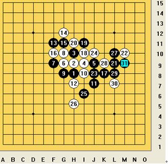

彭建国与那威的对弈
#1 彭建国与那威的对弈 作者：思●索○者 发表时间：2007-7-28 18:05:01
这是
执黑棋者：彭建国 执白棋者：那威
黑棋以寒星开局，三手棋后白棋继续应第四着棋，并未要求交换。白 4 成二后黑棋按“五手两打法”之要求于 J9 ， G9 点各投一子，白棋选 J9 点。此着如不这样那黑棋明显就有较大的优势了。最后黑 31 走出“一子双杀”的局面，白棋告负。
这棋局是我在一本名叫《五子棋入径与实战技巧》看到的。
